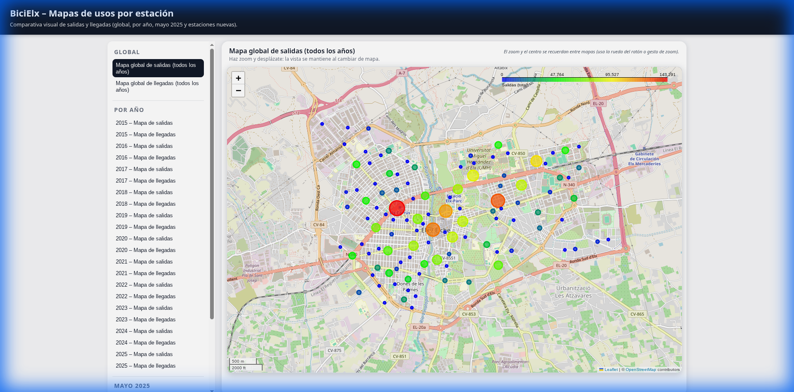
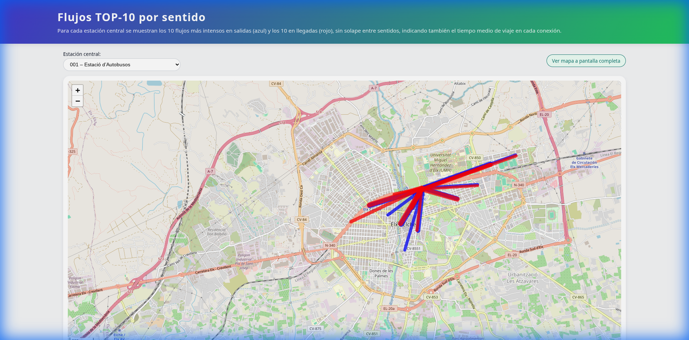
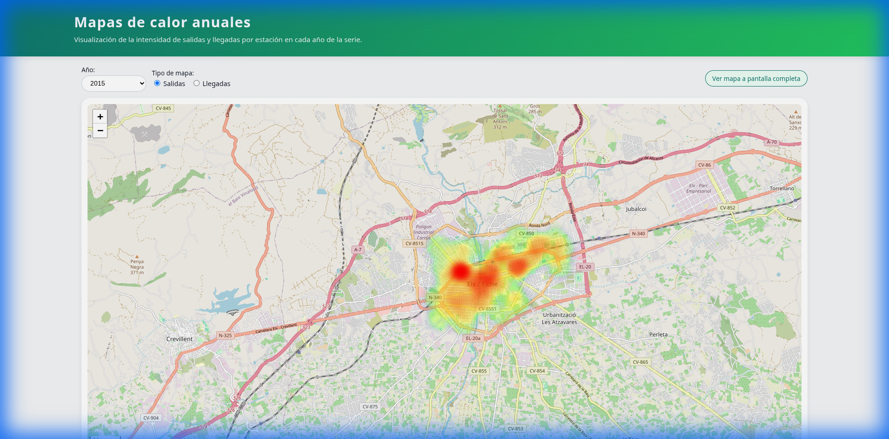
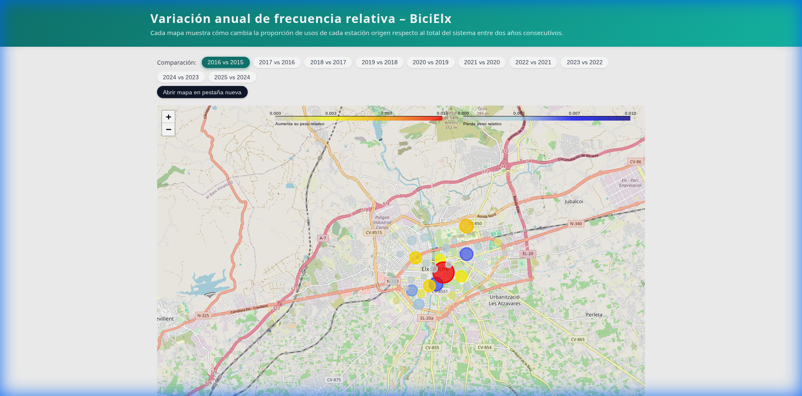
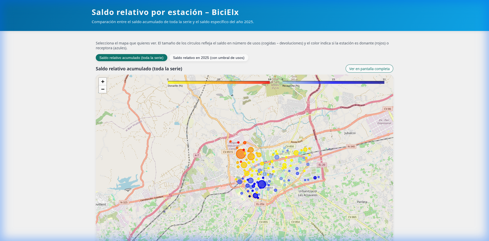
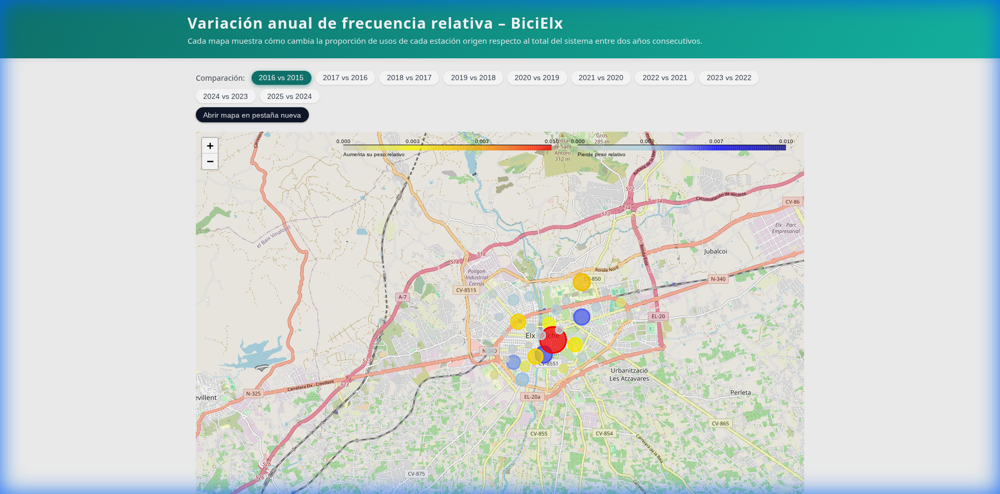
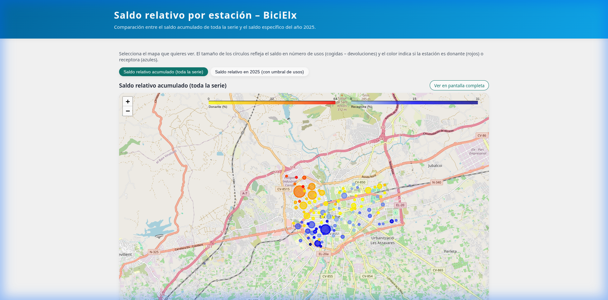

📈 Evolución Temporal


🕒 Patrones de Uso y Hábitos

Uso por Meses y Días
Promedios históricos de utilización según la temporalidad.

Uso por Día de la Semana
Comparativa entre días laborables y fines de semana.

Frecuencia Horaria (Destino)
Distribución de llegadas por franja horaria y estación.

Frecuencia Horaria (Origen)
Distribución de salidas por franja horaria y estación.

Promedio Mensual por Estación
Uso medio detallado para cada punto de préstamo mes a mes.
Duración de los Viajes
Histograma con la distribución del tiempo de uso de las bicicletas.
Análisis de Tiempo entre Estaciones
Scatter plot del tiempo medio de trayecto entre los diferentes
puntos.
🗺️ Análisis Geoespacial



 



Uso de Estaciones
Mapas detallados de salidas y llegadas para cada año del servicio.
Mapa de Flujos (O-D)
Visualización de las conexiones y trayectos más comunes entre
estaciones.
Mapas de Calor
Densidad de uso en la ciudad visualizada mediante heatmaps anuales.
Variación Media de Uso
Mapas de la evolución de la media de uso por estación a lo largo de
los años.
Variación de Frecuencia Relativa
Evolución de la importancia de cada estación en el sistema global.
Estaciones Donantes y Receptoras
Análisis del saldo neto de bicicletas por estación (entradas vs
salidas).
🏆 Rankings y Estadísticas
Top Estaciones por Año
Clasificación de las estaciones más utilizadas en cada ejercicio.

Top 20 Detallado
Las estaciones líderes en origen, destino y uso global.

Top Donantes y Receptoras
Ranking de estaciones con mayor desequilibrio de flujo.
Cuota de Mercado por Estación
Proporción de usos de cada estación respecto al total mensual.
Conexiones Top
Resumen de las rutas más frecuentes entre estaciones.

Top 10 Conexiones por Estación
Destinos más frecuentes para cada una de las estaciones del sistema.

Evolución Top 20 Mensual
Animación y gráficos de la evolución del ranking mes a mes.